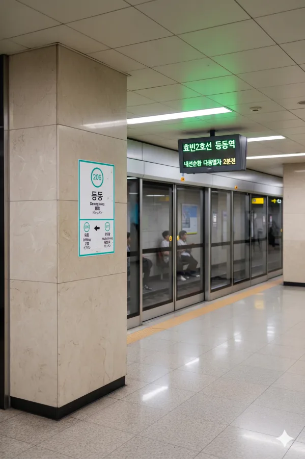

효빈 도시철도 2호선 206번. 효빈광역시 북구 남전동 431 소재이다.
2호선 급행열차가 정차하며, 특이하게도 출근 시간대와 비출근 시간대(평시)의 급행 정차 패턴이 달라 이전역과 다음역이 변동되는 특징을 가진 역이다. 추후 2034년에 효빈 도시철도 청엽선이 개통되면 환승역이 될 예정이다. 2호선의 역 번호는 206번이며, 청엽선의 역 번호는 Y02번으로 배정되었다.
인근에 엽월대학교와 덕북대학교 효빈캠퍼스가 있어 대학생 수요가 꾸준히 나오는 2호선의 핵심 역 중 하나다.
추후 청엽선이 개통되면 2호선 지하 역사 위쪽으로 청엽선 고가 역사가 신설될 예정이다. 지하 3층에서 지상 2층까지 등산해야 하는 막장환승이 벌써부터 우려되고 있다.
|
2
등동역 출구 정보
|
||
|---|---|---|
| 번호 | 주요 시설 및 방향 | 비고 |
| 1 | 남부초등학교 | |
| 2 | 청남초등학교 | |
| 3 | 등동행정복지센터, 청반초등학교, 덕북대학교 효빈캠퍼스, 엽월대학교, 청엽외국어고등학교 | |
| 등동역 이용객 통계 | ||
|---|---|---|
| 연도 | 일평균 이용객 | 비고 |
| 2020년 | 6,674명 | |
| 2021년 | 6,749명 | |
| 2022년 | 7,848명 | |
| 2023년 | 7,986명 | |
| 2024년 | 8,127명 | |

| 입 동 ↑ | ||||
| 하 | ㅣ | ㅣ | ㅣ | 상 |
| ↓ 헌이송 | ||||
| 상 | 2 효빈 도시철도 2호선 (완행/급행 공용) | 외선순환 시로 · 우전 · 신흥 방면 (평시 급행: 신흥 정차 / 출근 급행: 효빈공단 정차) |
| 하 | 2 효빈 도시철도 2호선 (완행/급행 공용) | 내선순환 중수 · 시청 · 효빈대학교 · 중앙로 방면 (평시 급행: 마잡 정차 / 출근 급행: 헌이송 정차) |
| ㅣ | ㅣ | |||
효빈광역시 시내버스 노선들이 주로 정차한다.
| 구분 | 정류소명 | 노선 번호 |
|---|---|---|
| 순방향 | 등동역 | 4, 8, 19, 80, 89, 193, 891, 892 |
| 역방향 | 등동역(건너편) | 04-1, 08-1, 91, 80-1, 89, 913, 891, 892 |